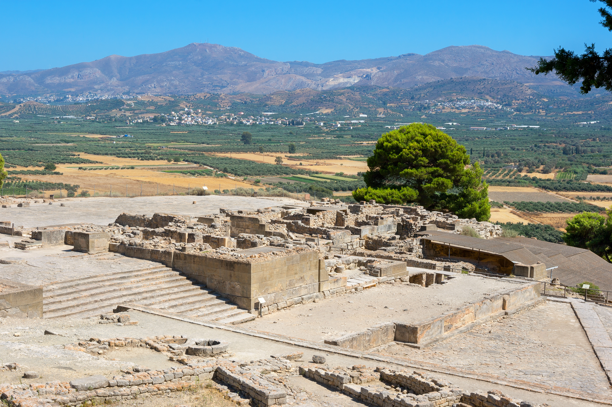

Ruins of the Palace of Knossos
It is a palace created by the Minoan civilization, who were the ones who lived in Crete in ancient Greece. It was the ceremonial and political centre of Minoan culture. The palace was abandoned and the reason for this desertion is still a mystery. There are many frescoes and columns from the Minoan culture.
Archeological site of Phaistos
Phaistos is an archeological site of the Bronze Age. It is located in the south of central Crete and south of Heraklion. Its name is related to the coins of the classic city. Phaistos was inhabited from about 4000 B.C. It was destroyed by an earthquake during the late Bronze Age and it was also rebuilt toward the end of this Age. This site belongs to the Minoan culture.

Gortynes
It is a municipality and an archaeological site, on the Mediterranean island of Crete. The area was inhabited for the first time around 7000 BC. C. At the main organized archaeological site, visitors can see the Roman Odeon and the Great Inscription with the Law Code of Gortina, the early Byzantine church of Saint Titus and the Antiquarium next to the modern refreshment room. In the same area, between the Agora and the Temple of Apollo are the ruins of the Roman baths (baths), as well as the Temple of Apollo, an honorary arch, and the Temple of the Egyptian deities with statues of worship of Isis, Serapis and anubis.